Plateforme LAOVAMaroantsetra · Madagascar
Safeguarding heritage.Keeping knowledge alive.Building the future.
Based in Maroantsetra, Plateforme LAOVA brings together people and skills committed to safeguarding, transmitting and promoting the cultural and natural heritage of Madagascar, with the communities who carry it.
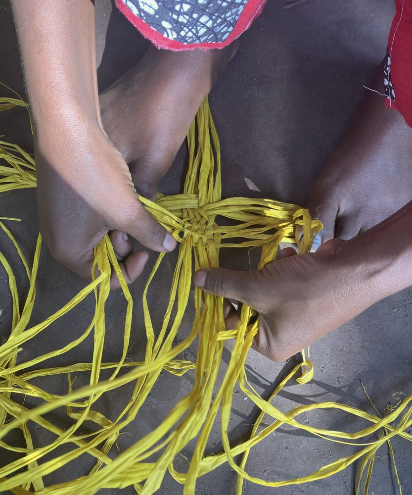
- Status
- Malagasy non-profit association
- Founded
- 2 July 2022, in Maroantsetra
- Territory
- Antongil Bay, north-east Madagascar
- Fields
- Heritage · culture · nature · transmission
noun, Malagasy — as defined in the association’s statutes
- Heritage; what is received from previous generations.
- What one chooses to know, to practise and to pass on in turn.
Safeguarding heritage does not mean freezing it. It means enabling those who carry it to keep knowing it, practising it, passing it on and drawing future prospects from it.
Our vision01Living heritage
A single fibre can be a resource, a skill, an income and a building material at once.
Heritage is not limited to objects. It lives in gestures, stories, customs and natural resources used with care. Its loss is never purely natural, nor purely cultural.
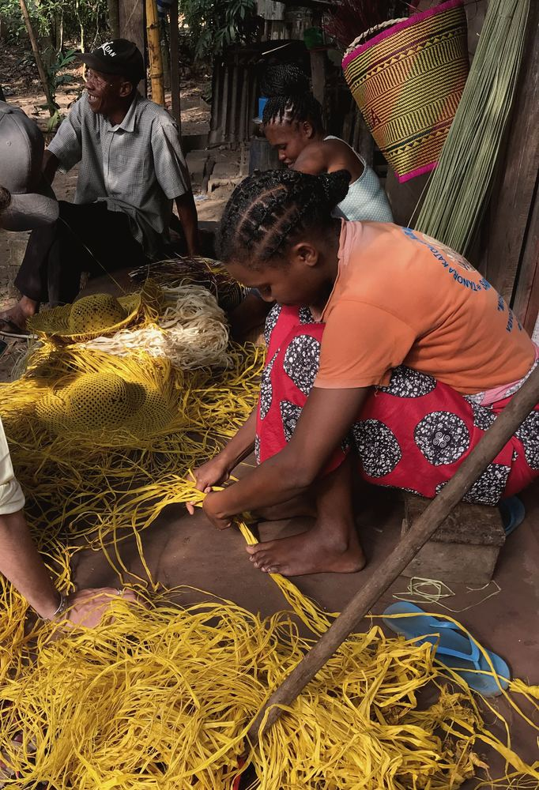
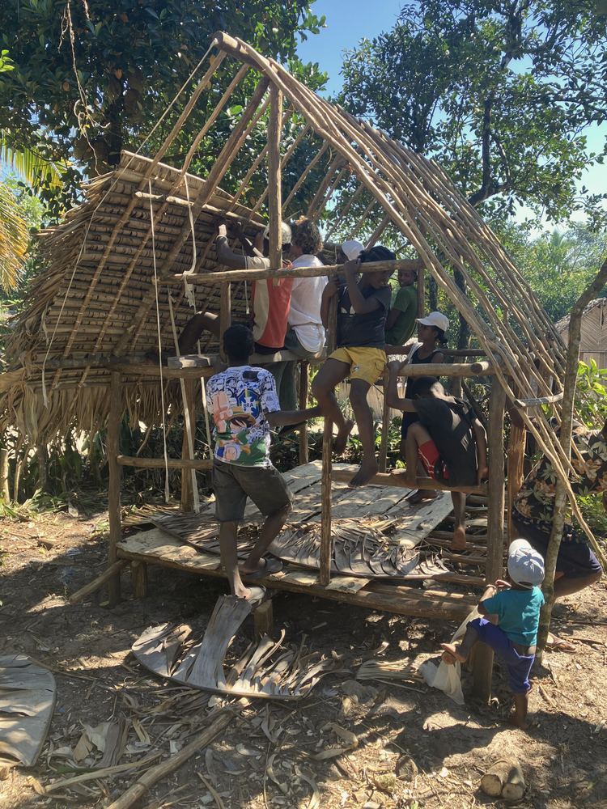
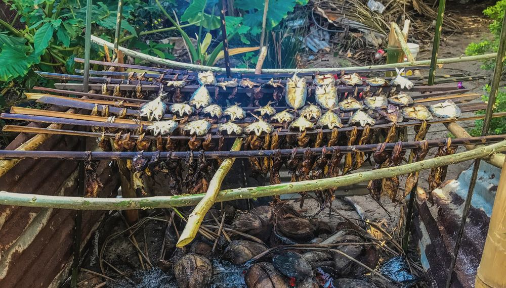
02One platform, many skills
One mission, complementary expertise.
Documenting a memory, restoring a natural resource, supporting a productive initiative or passing on a craft do not call for the same skills. Each project brings together the people, knowledge and partnerships suited to its reality.
- A
Heritage, memory and research
Oral memory, cultural practices, traditional architecture and crafts, documented with the consent of knowledge holders.
→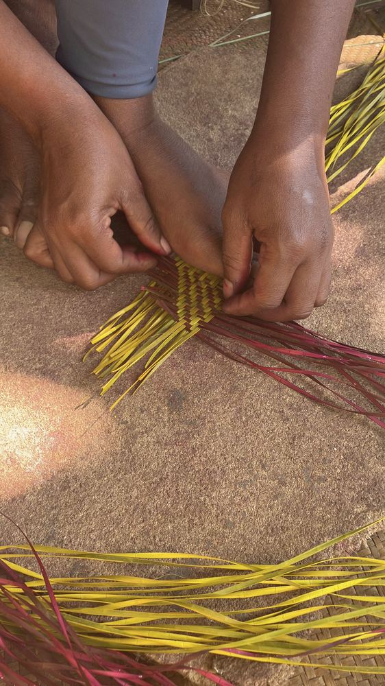
- B
Nature, biodiversity and living resources
Linking ecosystems, practices and livelihoods; protecting and restoring plant resources.
→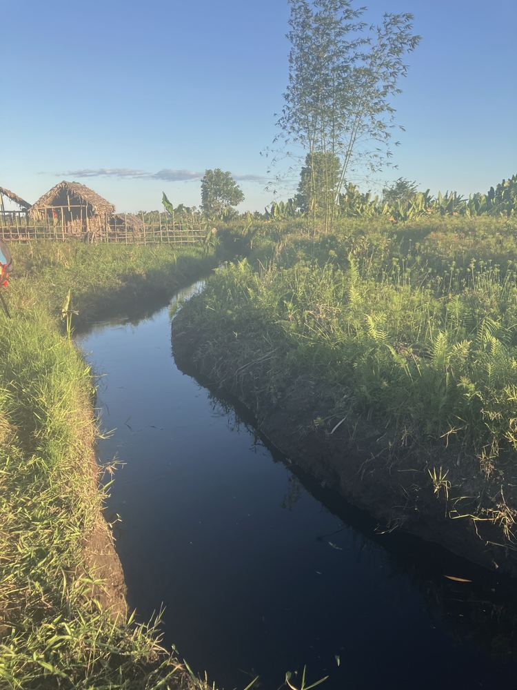
- C
Education and knowledge transmission
Intergenerational encounters, field-based learning, farming and craft practices.
→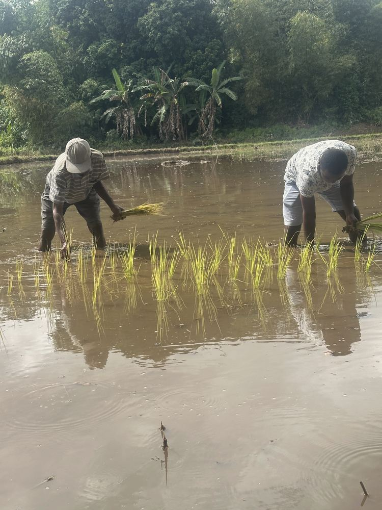
- D
Community development and responsible economy
Strengthening the productive capacity and autonomy of communities while preserving resources.
→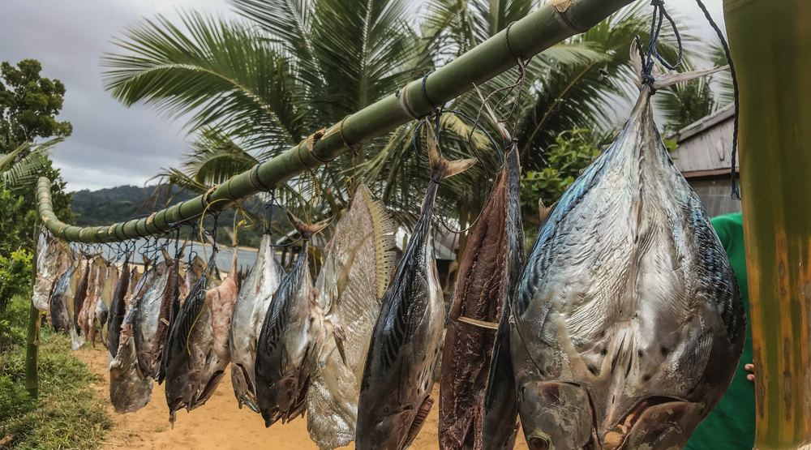
- E
Digital documentation, creation and communication
Archives, stories, photographs and video, shared only when knowledge holders agree.
→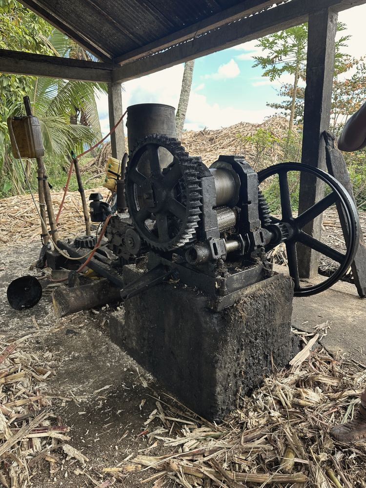
- F
Intercultural encounter
Hasina Immersion: cultural and community mediation, not a holiday offer.
→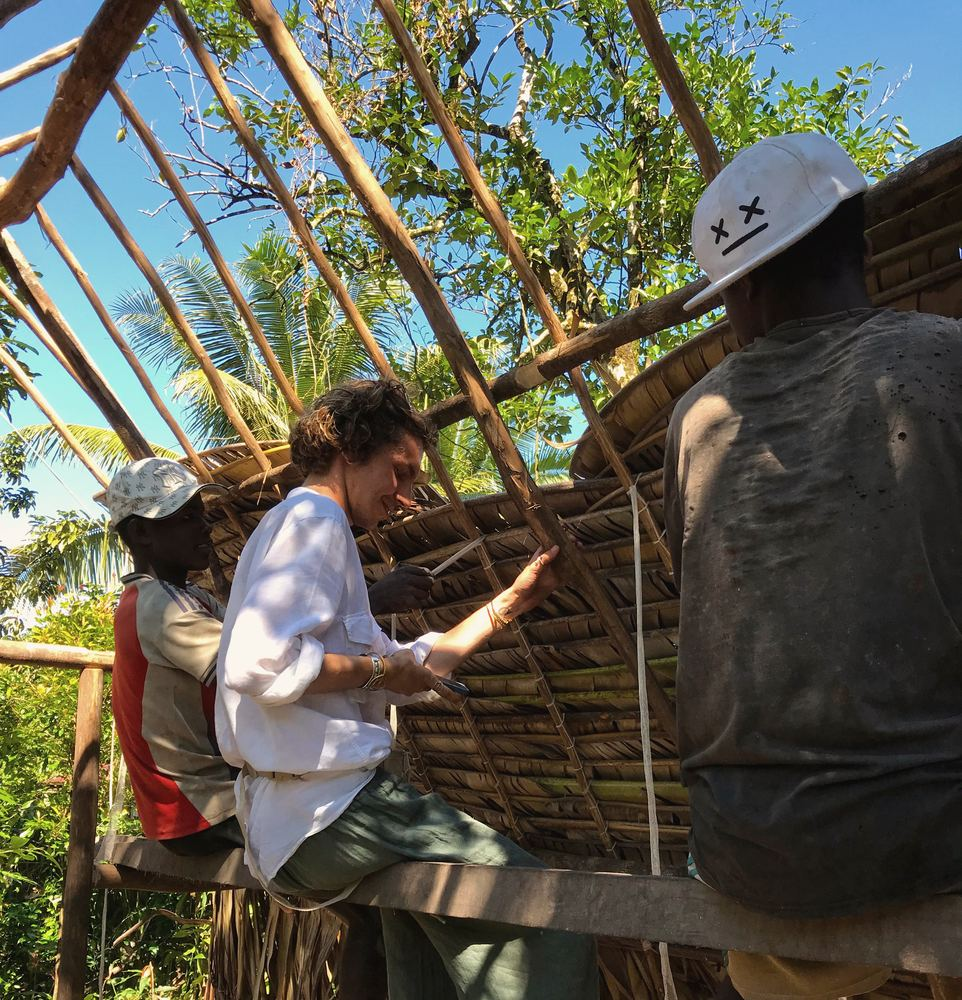
03Projects
Concrete initiatives, presented as they actually stand.
We always separate what is planned from what has been achieved. Each project sheet states its status, its territory and the date it was last updated.
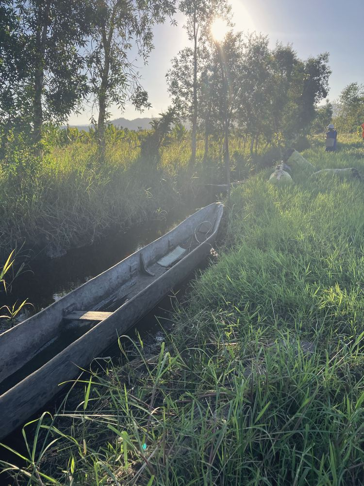
Penja, Raffia and Ravinala: protecting the plants behind local crafts and housing
Participatory mapping, nurseries, replanting and responsible use of the wetland plant resources of Antongil Bay.
- Territory
- Ankofabe, Sahasindro, Antanambe
- Framework
- GEF Small Grants Programme (SGP, OP8)
- Updated
- October 2026
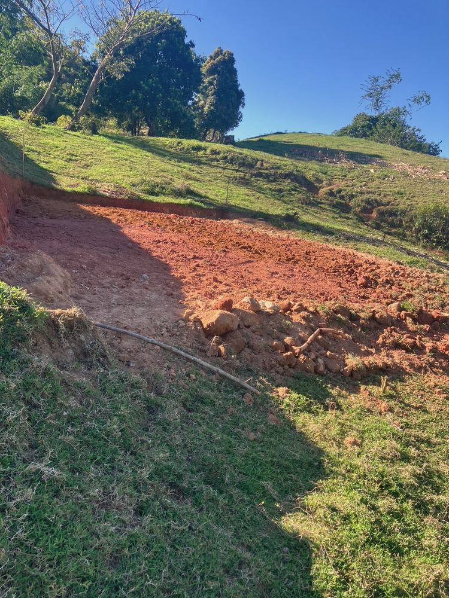
LAOVA Community Farm: producing, learning, passing on
An agro-pastoral core built step by step, intended to become a place of learning about land, animals, water and rural know-how.
- Territory
- Maroantsetra
- Phase
- A — productive core
- Updated
- October 2026
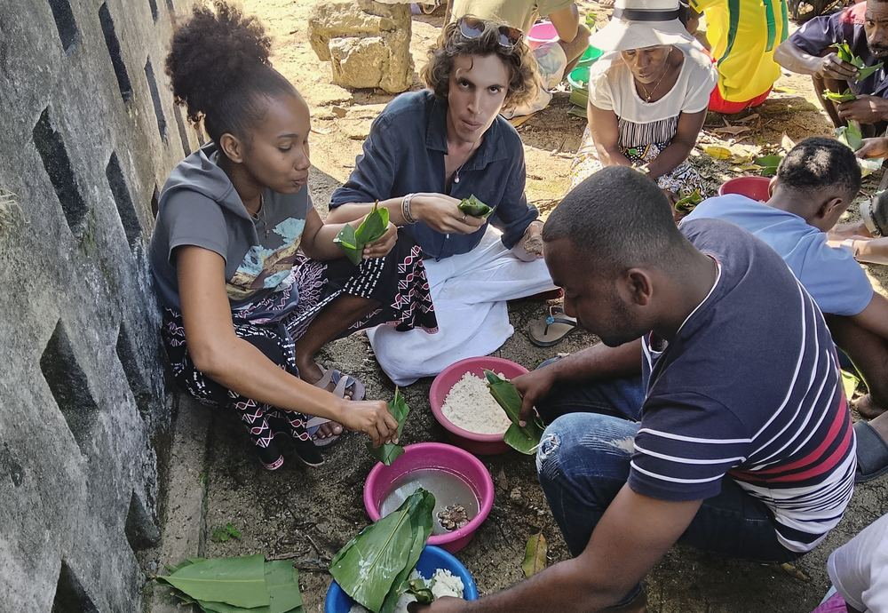
Hasina Immersion: meeting, understanding, sharing
Personalised encounters with LAOVA and its network, shaped by each person’s interests and by the explicit choices of local hosts.
- Territory
- Maroantsetra and surroundings
- Format
- On request, case by case
- Updated
- October 2026
04Territory
Rooted locally, national in scope, open to the world.
LAOVA is based in Maroantsetra, at the head of Antongil Bay. Here, the links between biodiversity, plant resources, housing, crafts, farming, oral heritage and communities can be understood first-hand.
Our statutes cover the heritage of Madagascar as a whole; our interventions, however, are always precisely located.
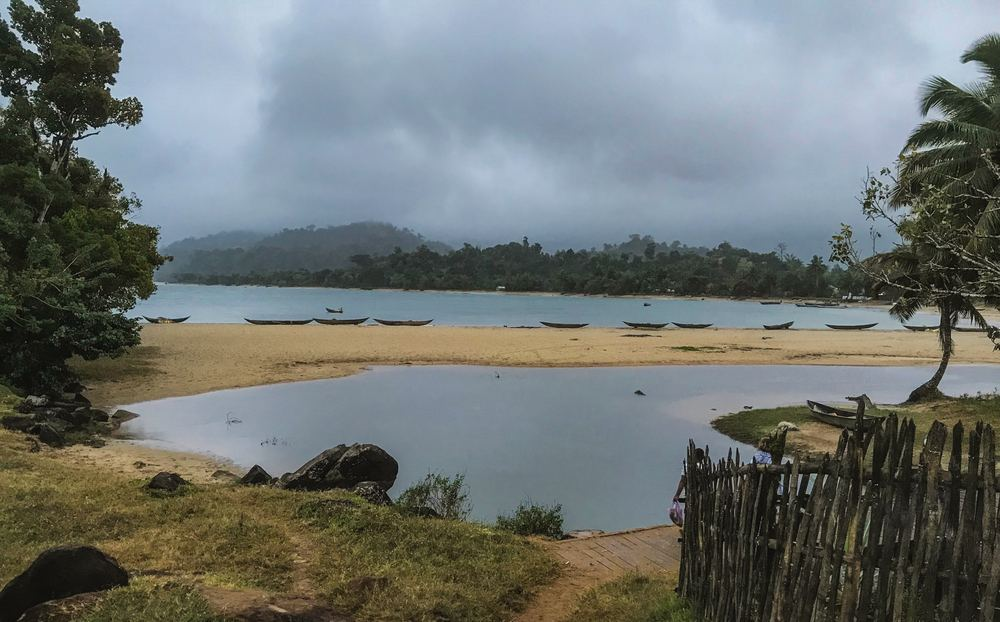
05Partnership
Let us build useful and respectful partnerships.
Universities, foundations, educators, associations, professionals and institutions: LAOVA welcomes dialogue with all who share its commitment to heritage and communities.
Cooperation between responsible partners, never outside supervision.